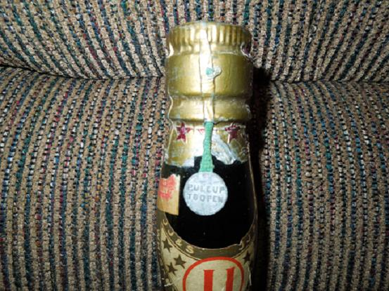
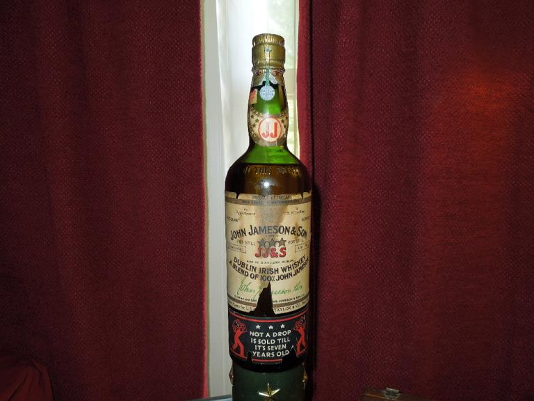

NOTE: This forum is no longer active. This is an archive copy of the forum as it was on 10 March 2018.
Yet another Jameson bottle query
5 posts
• Page 1 of 1
Yet another Jameson bottle query
 by DirtyRed » Sun Jul 08, 2012 3:59 pm
by DirtyRed » Sun Jul 08, 2012 3:59 pm
Hello Gents, I found this bottle of Jameson laying in an attic label down. The bottle is sealed with pull tab intact. The bottle has "FEDERAL LAW FORBIDS SALE OR RE-USE OF THIS BOTTLE" stamped just above the label. The label has "To H.M. The King". There is part of a N.Y.C. tax stamp still on the bottle. Any information as to the age and value of this bottle would be appreciated. Or should I pass it though my kidneys before watering any graves?
- Attachments
-

- DSCN0622a.JPG (77.3 KiB) Viewed 874 times
-
- 
- DSCN0590a.JPG (73.62 KiB) Viewed 874 times
-
- 
- DSCN0624a.JPG (63.68 KiB) Viewed 874 times
- DirtyRed
- New Spirit
- Posts: 2
- Joined: Sun Jul 08, 2012 1:21 pm
Re: Yet another Jameson bottle query
 by IrishWhiskeyChaser » Tue Jul 10, 2012 10:36 am
by IrishWhiskeyChaser » Tue Jul 10, 2012 10:36 am
Not 100% sure on this one.
However the condition is not the best and better examples have come up in the past.
The bottle could suggest 1960's but the Label & Capsule look older. Especially that pull tab. Maybe someone else has an opinion on it.
However I'm not sure if getting a spot on age will affect the value of it.
A good example from the 60's can be got for under €100 on Ebay. If older maybe in the €100-150 mark but cannot be certain.
Of course you often see sellers looking for prices like $500-1000 dollars but they are pie in the sky prices so don't let that colour your expectations.
However the condition is not the best and better examples have come up in the past.
The bottle could suggest 1960's but the Label & Capsule look older. Especially that pull tab. Maybe someone else has an opinion on it.
However I'm not sure if getting a spot on age will affect the value of it.
A good example from the 60's can be got for under €100 on Ebay. If older maybe in the €100-150 mark but cannot be certain.
Of course you often see sellers looking for prices like $500-1000 dollars but they are pie in the sky prices so don't let that colour your expectations.
Sláinte Adrian
- IrishWhiskeyChaser
- Site Admin
- Posts: 2910
- Joined: Tue Mar 17, 2009 1:37 pm
- Location: A Dark Dunnage somewhere in Galway
Re: Yet another Jameson bottle query
 by TheWhiskeyBro » Tue Jul 10, 2012 6:54 pm
by TheWhiskeyBro » Tue Jul 10, 2012 6:54 pm
Hi there I reckon this dates between no earlier than 1937 (Dublin Whiskey appears on label) & pre 1950 (slightly squatter bottle by then) - 1948 Ireland became a republic, so I would date this 1937-1948, value given condition is probably around €150
- TheWhiskeyBro
- Hogshead
- Posts: 962
- Joined: Tue Mar 17, 2009 11:44 am
- Location: Sandyford, Dublin
Re: Yet another Jameson bottle query
 by DirtyRed » Thu Jul 12, 2012 2:24 am
by DirtyRed » Thu Jul 12, 2012 2:24 am
Thanks for your quick response. This bottle belonged to a Pearl Harbor survivor. My guess is that he was hiding it from his wife, he was a deacon at his church and they were taught to abstain from all of the good stuff.
- DirtyRed
- New Spirit
- Posts: 2
- Joined: Sun Jul 08, 2012 1:21 pm
Re: Yet another Jameson bottle query
 by IrishWhiskeyChaser » Thu Jul 12, 2012 8:54 pm
by IrishWhiskeyChaser » Thu Jul 12, 2012 8:54 pm
If you'd like to make a few dollars from this I would suggest hanging on to it for a while. Jameson is riding on a crest of a wave but the collectibility of it yet has to really kick in. Hang though a few years and we'll see then.
Of course if you open it that wouldn't be the worst thing to do either ... Should be good and interesting.
Of course if you open it that wouldn't be the worst thing to do either ... Should be good and interesting.
Sláinte Adrian
- IrishWhiskeyChaser
- Site Admin
- Posts: 2910
- Joined: Tue Mar 17, 2009 1:37 pm
- Location: A Dark Dunnage somewhere in Galway
5 posts
• Page 1 of 1